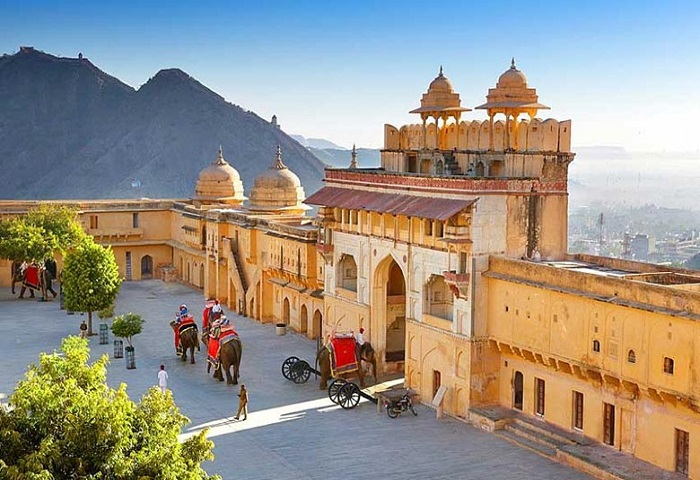

The Most top five Best Places In The India
Back Quoters

Location: Kerala.
Best Time to Visit: November-February.
Info: A network of serene lagoons and waterways offering houseboat experiences.
Fort-In-Jaipur

Location: Jaipur, Rajasthan.
Best Time to Visit: October-March.
info: A majestic fort showcasing Mughal and Rajput architectural grandeur.
(Promenade Beach)Pandi Cherry Beaches

Location:Tamilnadu,india
Info:rock beach is the popular strech of the beachfront in the city of punducherry.
Taj Mahal1

Location: Agra, Uttar Pradesh.
Best Time to Visit: October-March.
Info: A UNESCO World Heritage Site and symbol of love, built in white marble.
Goa

Location:Goa
Best Time to Visit:March to April
Info:Goa is a coastal state locates in western india and it's famous for beautiful beaches,vibrant.night ligth ,rich culture